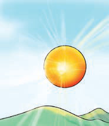
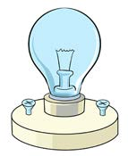
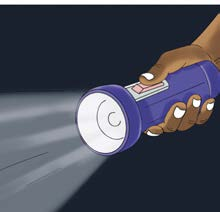

Figure 6: Sources of light energy
Activity 2
Use reliable sources of information, including online libraries, videos or digital labs to complete this activity.
1.List examples of light energy sources found in your environment
2.Draw one example of the light sources you listed in number (1) and write its use.
Examples of sources of light in our environment are like the sun, lamp and flash light. The sun helps plants to grow, the lamp helps us read and flashlight helps us see in the dark.
Objects that allow or block light from passing through
Activity 3
1.Use a library, reliable online sources, or other sources of information to identify objects that transmit light, block light, or partially transmit light.